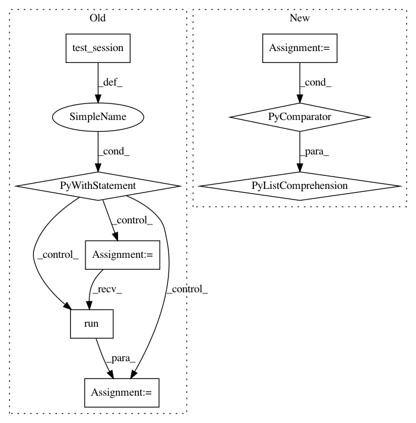

e967f1c82f1577fded52732e68f9128c98927692,opennmt/tests/encoder_test.py,EncoderTest,_encodeAndProjectInParallel,#EncoderTest#Any#,220
Before Change
inputs,
sequence_length=sequence_length,
outputs_layer_fn=outputs_layer_fn)
with self.test_session() as sess:
sess.run(tf.global_variables_initializer())
outputs = sess.run(outputs)
self.assertEqual(combined_output_size, outputs.shape[-1])
@test_util.run_tf1_only
def testParallelEncoderSameOutputsLayer(self):
self._encodeAndProjectInParallel(15)
After Change
sequence_length = tf.constant([2, 5, 4], dtype=tf.int32)
inputs = tf.zeros([3, 5, 10])
if isinstance(outputs_size, list):
outputs_layer_fn = [tf.keras.layers.Dense(s) for s in outputs_size]
combined_output_size = sum(outputs_size)
else:
outputs_layer_fn = tf.keras.layers.Dense(outputs_size)
combined_output_size = outputs_size * 2
In pattern: SUPERPATTERN
Frequency: 3
Non-data size: 8
Instances
Project Name: OpenNMT/OpenNMT-tf
Commit Name: e967f1c82f1577fded52732e68f9128c98927692
Time: 2019-02-20
Author: guillaume.klein@systrangroup.com
File Name: opennmt/tests/encoder_test.py
Class Name: EncoderTest
Method Name: _encodeAndProjectInParallel
Project Name: tensorflow/models
Commit Name: 5e854f25098ca40a4ac80197607bf883feaeb375
Time: 2018-02-13
Author: lzc@google.com
File Name: research/object_detection/utils/learning_schedules_test.py
Class Name: LearningSchedulesTest
Method Name: testManualStepping
Project Name: tensorflow/models
Commit Name: 5e854f25098ca40a4ac80197607bf883feaeb375
Time: 2018-02-13
Author: lzc@google.com
File Name: research/object_detection/utils/learning_schedules_test.py
Class Name: LearningSchedulesTest
Method Name: testCosineDecayWithWarmup